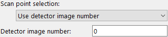
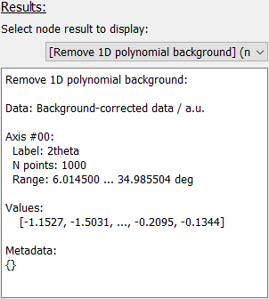
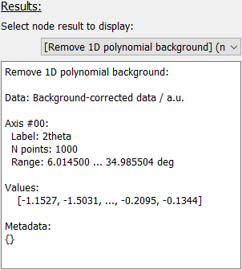
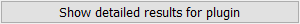
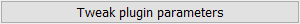

Workflow test frame
The Workflow test frame can be used to run the
WorkflowTree locally
for a single scan point and visualize all results, including intermediate
results.
{kind=link}
The frame holds control and result selection widgets on the left and a plot canvas for data visualization on the right.
Keeping the Workflow up to date
The WorkflowTree
is automatically kept up to date. If any Plugin, Plugin Parameter or ScanContext
Parameter changes, the WorkflowTree is automatically updated.
In these instances, it is not required to manually update the
WorkflowTree.
However, if any global settings have changed, for example the detector mask file, the user needs to manually reset the WorkflowTree. This can be done by clicking the corresponding button at the top left of the frame.
Data source selection

A single frame must be selected to test the
WorkflowTree. Three
options exist for selecting the frame which can be toggled by the “Image
selection” Parameter (see image on the right).
Using the “Global index” entry, a datapoint can be selected by its absolute number in the acquisition sequence (i.e. chronologically starting with 0). This number must be given in the “Global frame index” Parameter field.

Selecting the “Use scan indices” will allow the user to pick a datapoint based on its position in the scan. Parameters for all defined scan dimensions are shown and must be used to select the desired datapoint.
Selecting the “Use detector image number” will allow the user to pick a datapoint based on the detector image number. This accounts for offsets in image numbers, as defined by the “Starting index” in the Scan settings.
Processing
Clicking the “Process frame” button will start the workflow processing.
Note
Depending on the selected workflow, this operation might take a few seconds and the GUI will be unresponsive during processing. The user is also informed that pydidas is busy by displaying the OS’s busy mouse cursor.
Any pyFAI integration will require an initialization which takes several seconds and must be performed again if any pyFAI integration Parameters change.
Results
 

After running the local processing, the results for the different nodes can be visualized by selecting the corresponding entry from the results drop-down selection. This will open a text box with additional information about the plugin results (see image below). Information about all result axes, values and metadata will be displayed in the box and a plot or image will be shown in the data display, if the results are one- or two-dimensional, respectively. For any other result dimensions, only the text information will be shown in the box.
Further details
Detailed results
Some plugins have defined detailed results which can be visualized in addition to the generic plugin results. This information can be used for checking if the Plugin behaves as expected. Details about the opened window can be found in the Show Detailed Plugin Results window manual
Tweak plugin parameters
The option to tweak plugin parameters exists for all plugins and appears below the result info box once a plugin has been selected.
This button will open a new window which allows to test different Parameter options on the fly. For details, please refer to the Tweak Plugin Parameter window manual